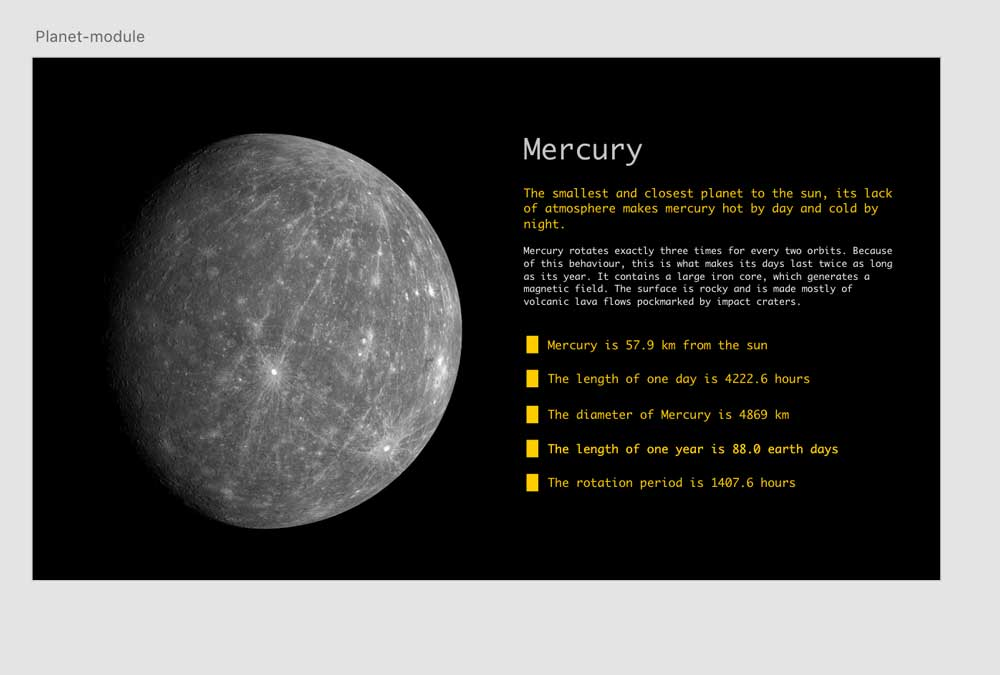
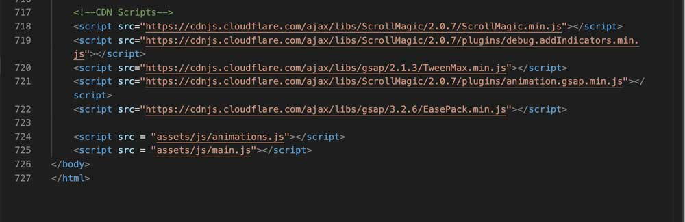
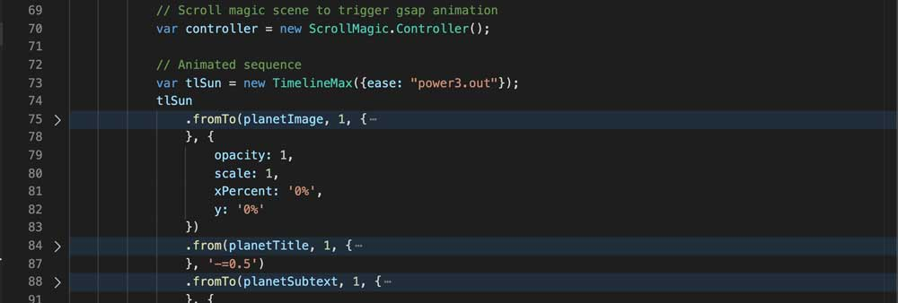
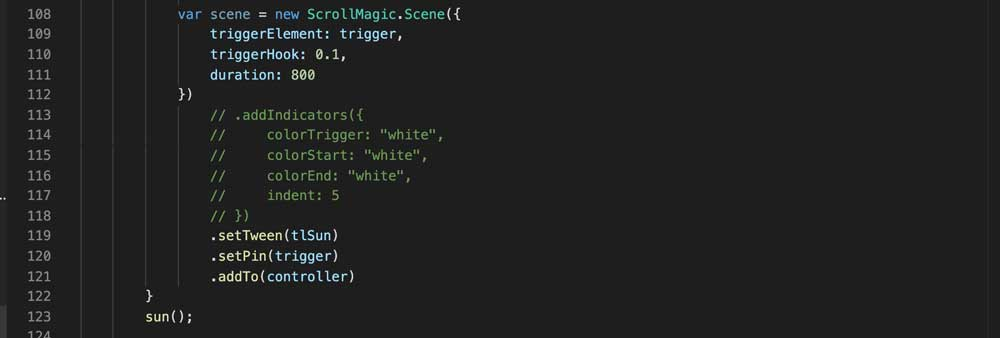
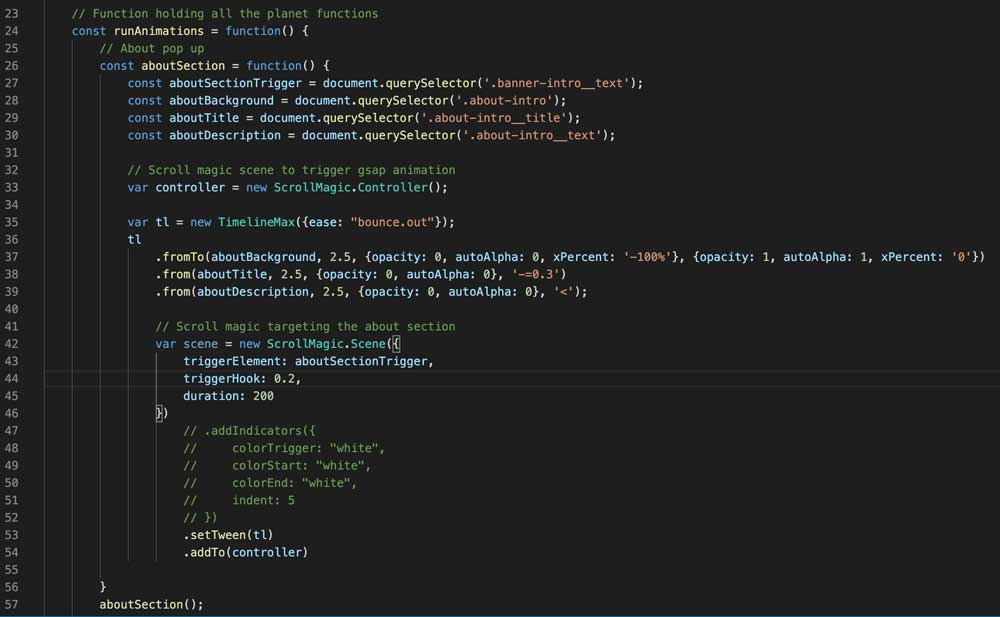
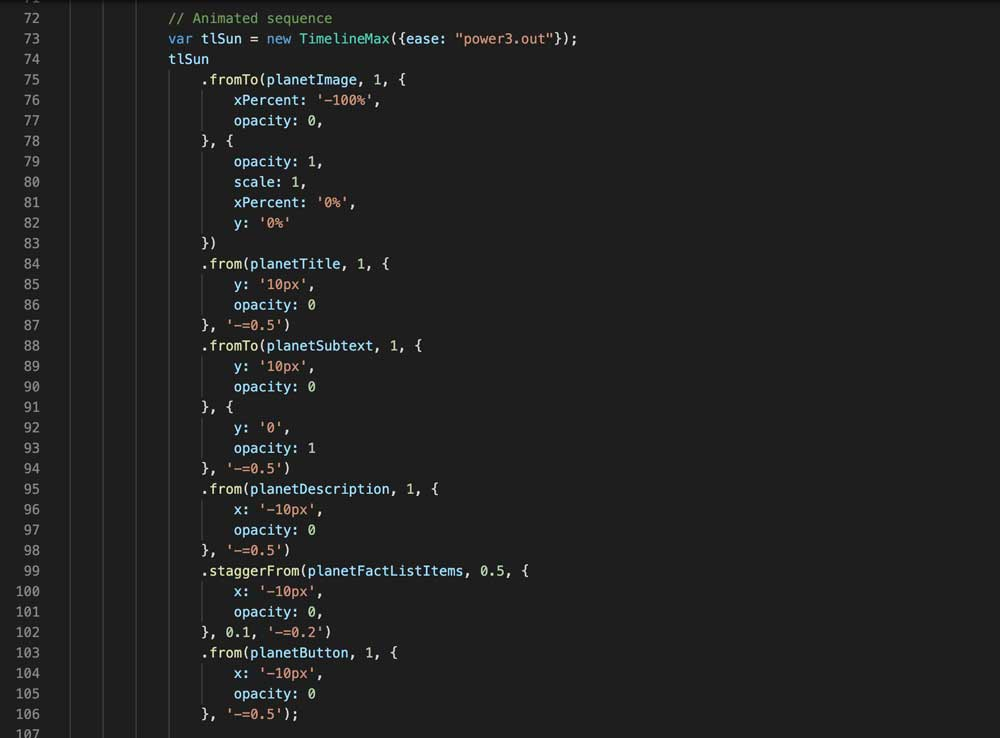
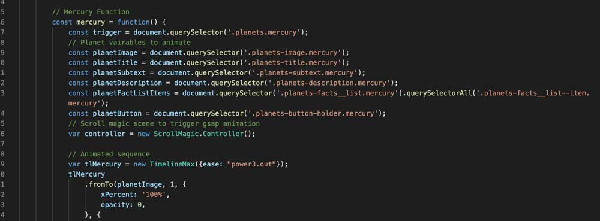
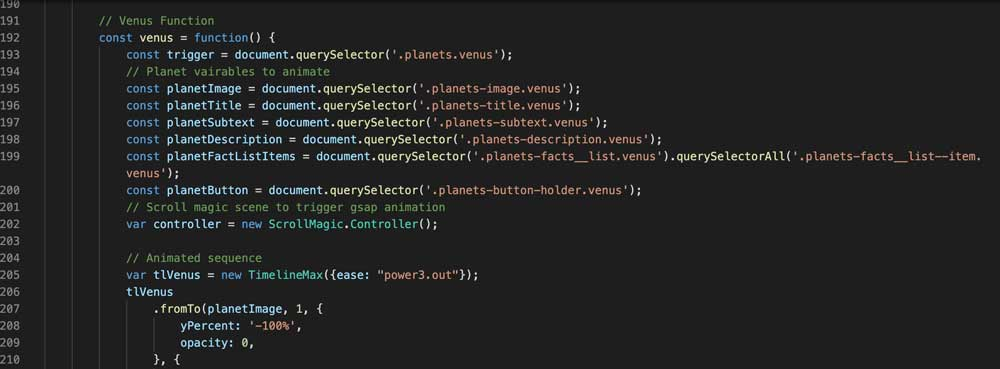

Greensock, a powerful JavaScript animation Library that I would certainly be using again on future projects
Creating an animated website using GreenSock, as well as ScrollMagic, proved to be both fun and challenging - but a powerful JavaScript library that I will be using for animations on future projects.
Aim
To create a fun, immersive and animated experience for users that briefly teaches users about the solar system.
Objectives
Research and learn the fundamentals of GreenSock and the benefits of using it.
Use XD to design how the website may look and think about the type of animations to do.
Research and learn about the solar system.
Build the website using HTML, SCSS and GreenSock.
Definition
The GreenSock Animation Platform (GSAP) is a powerful JavaScript animation library that is used to create scripted animations with a clear focus on performance and optimisation (Soueidan, 2017). GreenSock is a widely popular tool used by many developers and big brands all over the world – with some of those brands being Adobe, Google, Nike, Microsoft and Amazon.
There are many benefits to using GreenSock such as it being the fastest full-featured scripted animation tool on the planet, it is easier to control a large animated sequence using GreenSock timelines, and GreenSock solves all browser compatibility issues for you (Greensock, 2014). There are many more benefits to using GreenSock, but these features alone made me want to learn this technology.
Animations for the web – when used in the right context – can significantly improve the user experience for a user when using your website (Diaz, 2018). Web animations has always been an interest of mine and a skill that I would like to improve on. So, by learning GreenSock, it will improve my skillset as a developer and allow me to create high quality animations that can provide unique experiences for users who interact with websites create – as well as improving the user experience.
Prior to this project I have little knowledge in Greensock and a basic understanding of JavaScript – which helped with adapting to GreenSock quicker. I have only ever created animations using CSS Keyframes and transitions and the little knowledge in GreenSock was when I used a basic animated timeline for a client project.
Set Up
To bring this project to life, I used HTML, SCSS, GreenSock, and some basic ScrollMagic in order to trigger each GreenSock animated timeline when coming into view of the user.
Location
Have a look at the code for this project on Github.
How
To begin with, I first created a website wireframe in Adobe XD to experiment how I want the website to look and begin to think about the type of animations I could add. After the wireframes were created, I built the website using only HTML and SCSS so that after learning more about GSAP, I could then incorporate my learning straight into the project.

Adobe XD high-fidelity wireframe for the Mercury section
Inspiration
Apple create some amazing and unique experiences on their website when browsing various products. They display some complex animations at a certain point when a section comes into the user’s viewport and this is something that I would like to replicate in a similar manner for the solar system website.
ScrollMagic
Although Apple may not specifically use ScrollMagic, it seemed like the quickest tool I could quickly learn in order to display GreenSock animations when a section comes into the viewport. Cerminara (2012) states ScrollMagic is a jQuery plugin that uses GreenSock for doing animations, so it seemed like the best tool to trigger my GreenSock animations upon scrolling. I used ScrollMagic on this project so that once each section of the planets comes into the viewport, I can trigger an animated GreenSock timeline that the user can control with their scroll. Read this article from Nicholas Cerminara to learn more about ScrollMagic.

The CDN Scripts I needed to begin creating my animations
Using GreenSock
GreenSock is powerful and there are many things you can do with this tool, which can be overwhelming at first. I found reading the GreenSock documentation and the GreenSock cheat sheet proved to be extremely useful in helping me understand the basics. GreekSock comes with four core tools – which are TweenLite, TweenMax, TimelineLite and TimelineMax. They can be confusing at first but there is no major difference between TweenMax and TweenLite, it’s just that TweenLite is slightly faster but TweenMax has a few more properties.
First Animation
The first animation I created using GreenSock was the flashing stars effect on the banner section. I wanted to create the effect of one-star flashing brighter than the other – just like we would see in our sky. After grabbing the stars – by their odd or even position in the HTML – I initiated my first timeline. TimelineMax lets you add default options that apply to the whole timeline and my options repeating the animation indefinitely and ensuring the animation goes back and forth smoothly – this is what yoyo does.

The code I used for every animated section to initialise ScrollMagic

This code creates a new scene and triggers the GreenSock animated timeline when visible in the viewport. I set the GreenSock timeline to be triggered when the trigger element hits the planet section title. The code in the comments are useful debug indicators that allow you to visualise where the ScrollMagic trigger actually is.
It was then time to add my first tweens, with the tween being .fromTo({}) – which basically stays start from the values given and transition to the values you give.

My first GreenSock timeline for the website, which was for the about slide in. With three lines of code I told each section to go from opacity: 0 and go to opacity: 1. The xPercent pushes the whole section off screen and then slides it back in when asked to.
Planet functions
I separated each planet section into their own individual function in order to trigger different animations to the planets upon scroll. Although there are eight separate planet functions, each planet follows a similar timeline function. The goal of the website is to ensure the user can learn about the planets in a simple yet fun manner - so I did not want to over animate each section.

Each planet had a similar GreenSock timeline, with tweaks to the direction in which each planet slides into view. Similar to the about section, you simply place in order from top to bottom what you want to animate in that order. The syntax becomes repetitive, this is why GreenSock can be easy to pick up at first when creating simple animations.
The key to a smooth timeline is adjusting the timing of each Tween. After some Tweens you can see '-=0.5', this is me telling that Tween to start minus 200ms before it was mean't to in order for it to smoothly transition after the previous animation.
Evaluation
Although I managed to successfully create the animations I wanted to, there are many areas in which this project can be improved.
Due to me having little knowledge inn JavaScript, the code for selecting each section I wanted to animate could have been reduced drastically. There is a term web developers are familiar with, and it’s the dry principle – which basically means don’t your code (The Valuable Dev, 2019). For every planet function, I repeated the code every time to select the elements I want to animate because due to my lack of experience with JavaScript and the deadline of the project looming, I was unable to come up with a solution to only declare my variables once but trigger the animations depending on the specific section.

Declaring variables/constants inside the Mercury function. This was repeated inside every planet function but just changed the planet name inside the query selector to the planet name of the function.

Declaring variables/constants inside the Venus function. The same variable/constant declaration code as the Mercury function but just changing the mercury class to a venus class.
Another problem I came across was a huge accessibility issue, in which the user could not use the tab key to navigate through the website. Due to each section only animating on scroll, the content basically is not visible, therefore you cannot view the animation unless scrolling. After attempting solutions such as trying to disable the main function if the user presses the tab key, I was unsuccessful. To fix this issue I simply created the same page but stripped away all the animations so that the user can tab through the website as normal if they choose to.
This experience will help me think about writing cleaner and more maintainable JavaScript code for future projects.